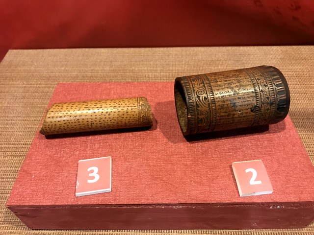
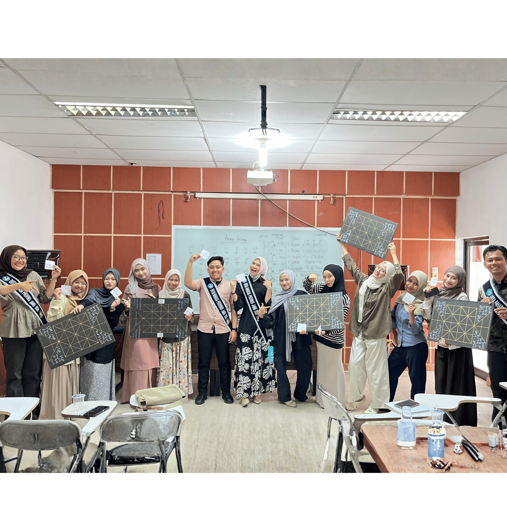

Menelusuri jejak peradaban dan keagungan Aksara Incung dari alam Kerinci.
Aksara Incung adalah salah satu warisan literasi tertua yang dimiliki oleh masyarakat Jambi, khususnya di dataran tinggi Kerinci. Aksara ini merupakan bukti nyata bahwa peradaban leluhur Nusantara telah memiliki sistem komunikasi tertulis yang sangat maju sejak berabad-abad lalu.
Berbeda dengan aksara modern yang ditulis di atas kertas, nenek moyang kita memahat Aksara Incung menggunakan ujung pisau yang tajam di atas media alam. Potongan bambu, tanduk kerbau, dahan pohon, hingga kulit kayu menjadi saksi bisu mantra, puisi, dan hukum adat yang diwariskan dari generasi ke generasi.

Hari ini, melalui platform SERAMBI dan permainan Main Basamo, kita tidak membiarkan aksara ini punah ditelan zaman. Kita membawanya keluar dari museum, meletakkannya di atas meja bermain, dan menjadikannya identitas kebanggaan bagi generasi muda Jambi untuk diperkenalkan kepada dunia.

Lihat lebih dekat peninggalan Aksara Incung di alam Kerinci.